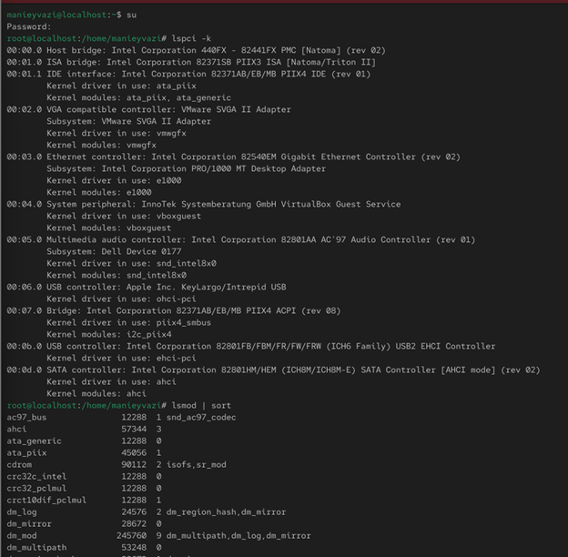
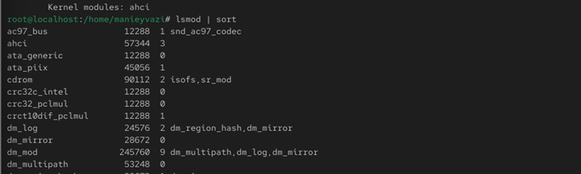
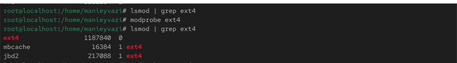
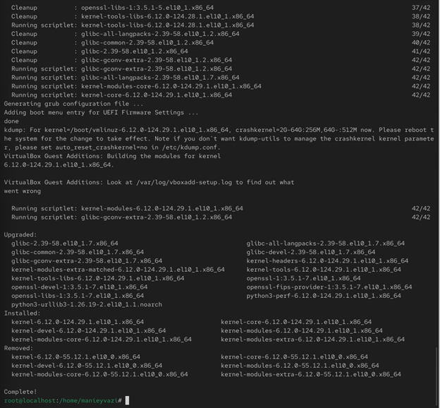
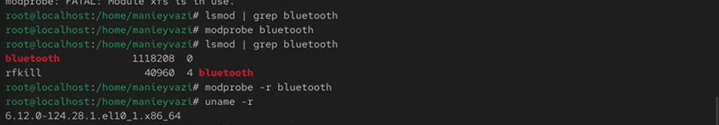
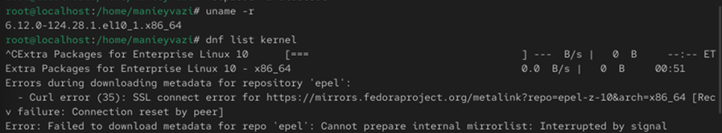
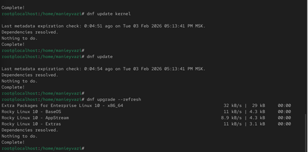

Получение навыков работы с утилитами управления модулями ядра операционной системы Linux.

Рис. 1 — Вывод команды lspci -k
-.

Рис. 2 — Список загруженных модулей ядра

Рис. 3 — Информация о модуле ext4
-.
Рис. 4 — Выгрузка модулей ext4 и xfs
-.

Рис. 5 — Загрузка модуля bluetooth
-.

Рис. 6 — Информация и выгрузка модуля bluetooth
-.
Рис. 7 — Проверка версии и списка пакетов ядра
-.

Рис. 8 — Обновление ядра и системы
Проверка работы системы.

Рис. 9 — Проверка версии ядра и информации о системе
В ходе работы были изучены основные приёмы управления модулями ядра в Linux. Были рассмотрены команды для загрузки, выгрузки и анализа модулей, а также получены навыки обновления ядра системы с помощью dnf. Работа позволила закрепить практические знания по администрированию ядра и модульной архитектуры Linux